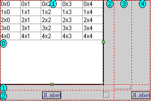
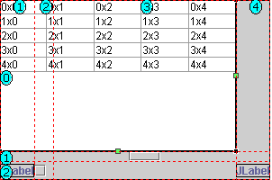

You can set a component in a GridBag layout to span multiple columns
or rows. You can set this in the property constraints or by visually dragging
the component in the Design view.
By default, when you drop a component into a GridBag layout, the
visual editor sets the x and y values to assign it to a cell. However, two
additional constraints available for a component are gridheight and gridwidth,
which are properties on the GridBagConstraints object that is instantiated
for each component.
- The gridheight constraint is an integer that indicates the number of rows
that the component should span.
- The gridwidth constraint is an integer that indicates the number of columns
that the component should span.
To use the Design view to visually span components across GridBag
rows and columns:
- Select the component in the GridBag layout that you want to span
across multiple rows or columns. The component will show a black selection
border around it with two green boxes, or handles, on the right and bottom.
- Click and drag either of the green handles to span the component
across grid cells. The cursor will show the x,y coordinates
for the grid cell where you are spanning to. The following image shows a JTable
that occupies a single cell. Notice the green handle on the right, which can
be used to span the component across columns:

- Release the mouse button to complete the span. The
grid width and grid height constraints will be set accordingly based on the
number of rows or columns you spanned. The following image shows the same
JTable after spanning the JTable across three columns. The gridwidth for this
component is now set to 3:

You can also use the Properties view to manually set the grid height
and grid width for a given component in a GridBay layout.